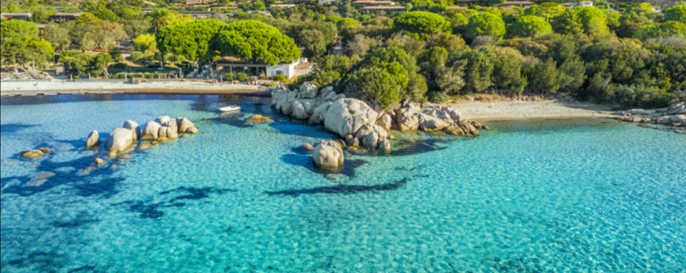
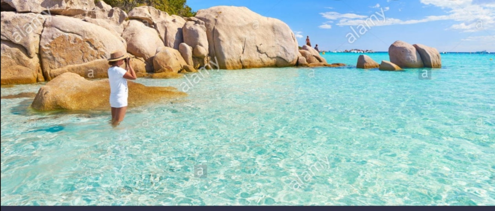
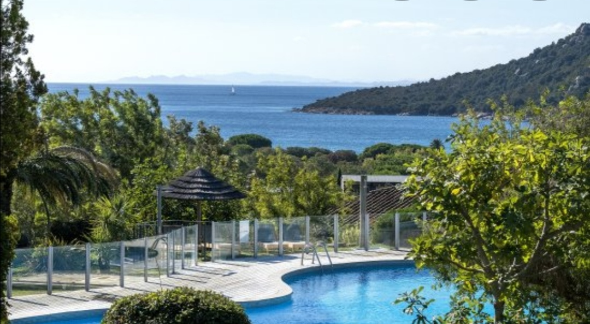
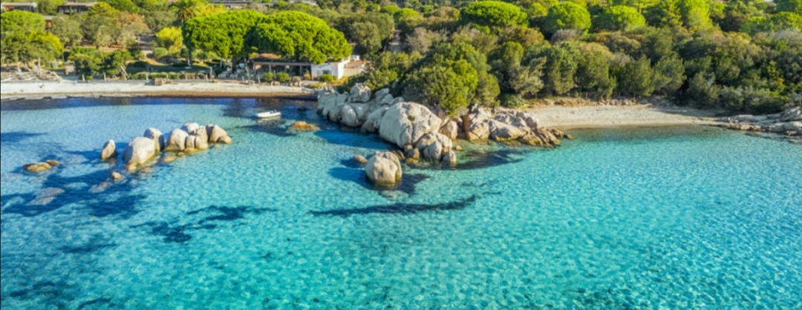
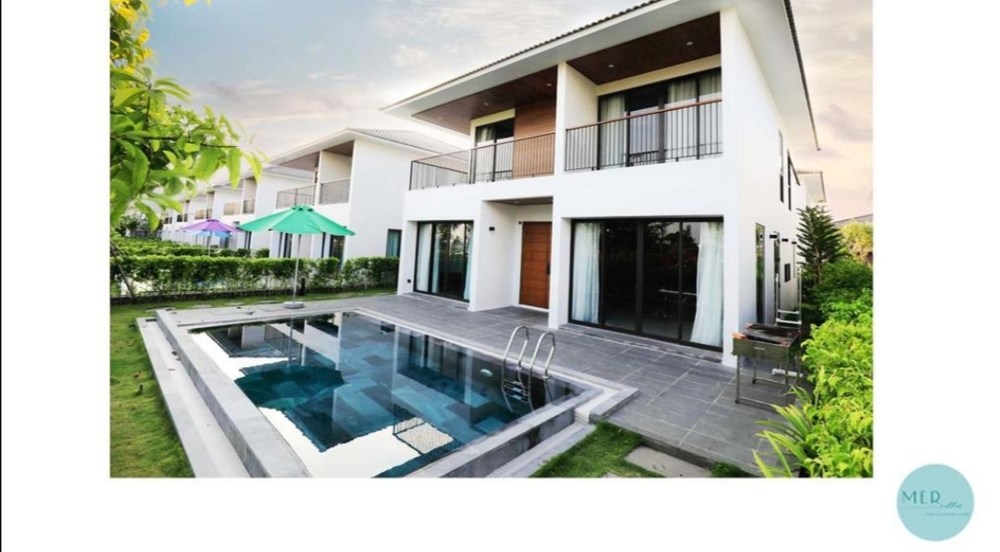
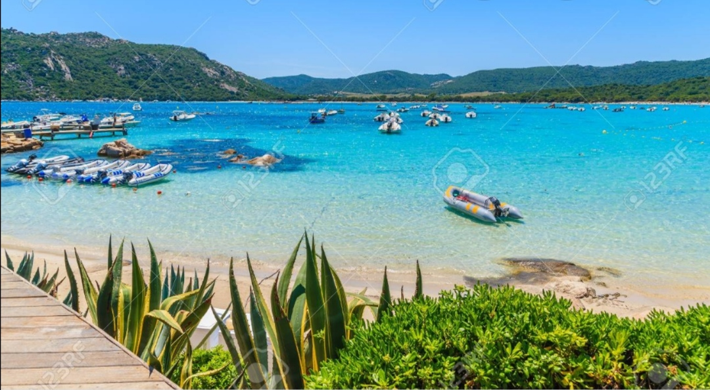
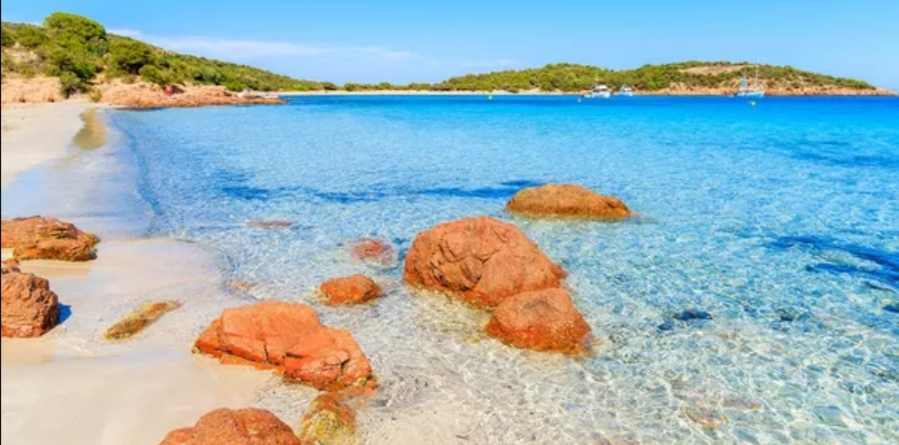
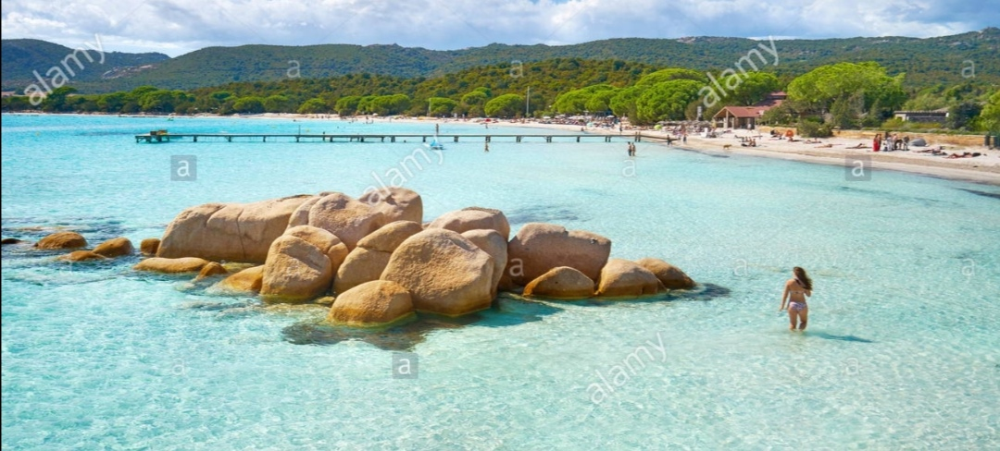
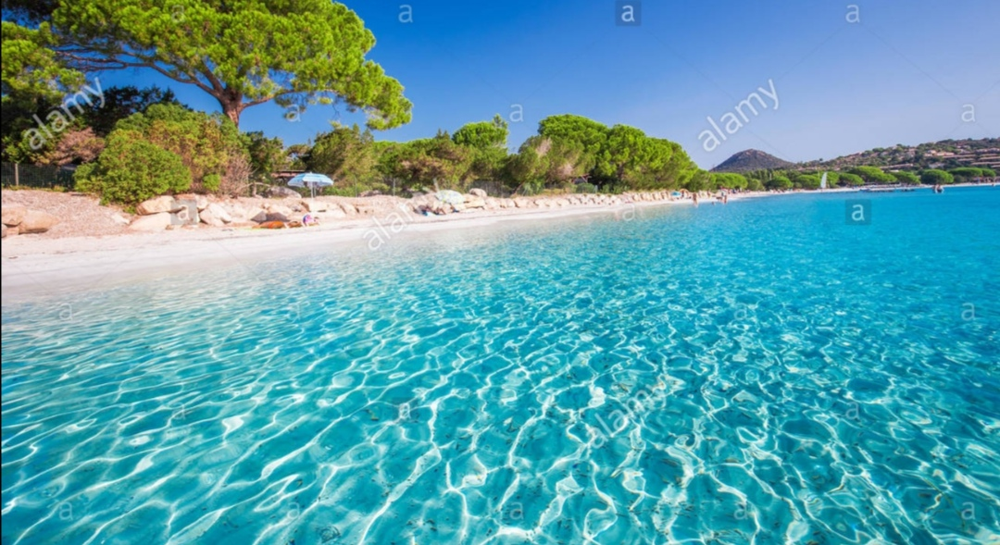
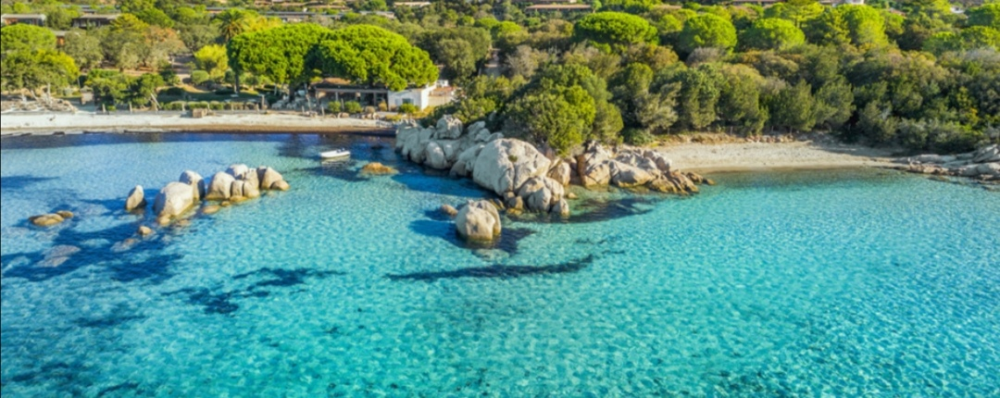

|  |  | SANTA est un petit paradis. il reste assez sauvage avec ses flores qui font de lui une vraie carte postale. Il ya de quoi explorer une autre dimension sous l'eau avec un masque. En amoureux, en famille ou entre ami, nous vous invitons à conjuguer détente et plaisir tout en profitant des services et du confort d'une résidence conviale, bien-être et authenticité seront les maîtres mots de votre séjour. |
|  |  | si vous avez vraiment enviede sensations fortes cet été, venez découvrir les plus belles falaises corse. si pour vous l'escalade est une véritable passion, l' île de beauté vous réserve de magnifiques sites dans un cadre à couper le souffle. Un patrimoine naturel d'une rare beauté que les plus téméraires pourront vraiment apprécier depuis différents points de vue. N 'oubliez surtout pas vos casque, cordes, baudrier, sangles, mousquetons, huit, matériel de rappel, coinceurs pour une escalade dans de meilleures conditions. |
| si vous avez vraiment enviede sensations fortes cet été, venez découvrir les plus belles falaises corse. si pour vous l'escalade est une véritable passion, l' île de beauté vous réserve de magnifiques sites dans un cadre à couper le souffle. Un patrimoine naturel d'une rare beauté que les plus téméraires pourront vraiment apprécier depuis différents points de vue. N 'oubliez surtout pas vos casque, cordes, baudrier, sangles, mousquetons, huit, matériel de rappel, coinceurs pour une escalade dans de meilleures conditions. |
|  |  |  | |||||||||||||||||||||
|  |  |  |